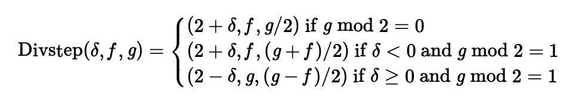
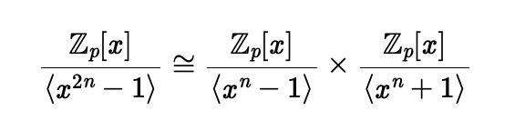

In May 2026, I presented Accelerating and Verifying Constant-Time Modular Inversion at EUROCRYPT 2026.
In October 2025, I was invited to give a brief introduction to SafeGCD (also known as Bernstein-Yang inversion) in the course “Cryptography Engineering” at NTU.

In August 2025, I was invited to give a lecture on Number Theoretic Transform at Core Program held by ZK Education.
